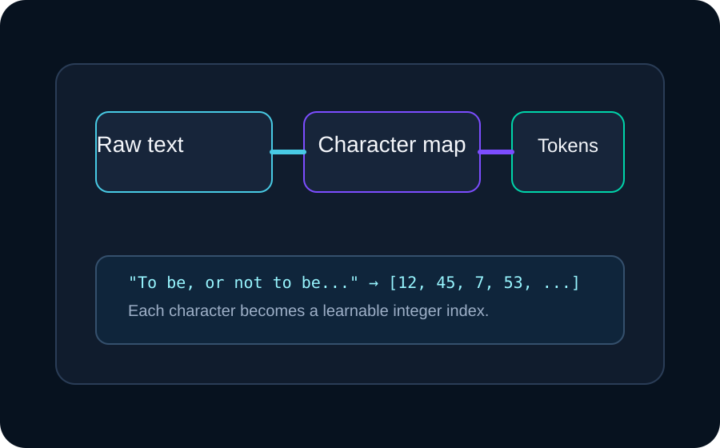

This deck explains the Python script block by block, so anyone can understand how a tiny GPT-like model is built, trained, and used to generate text.
PyTorchTransformerAttentionGeneration
What you will learn
How text becomes tensors
How attention works
How the model is trained
How it writes new text
1. Setup
Import libraries and choose the device
The script starts by importing PyTorch and selecting GPU, MPS, or CPU automatically.
import torch
import torch.nn as nn
from torch.nn import functional as F
device = torch.device(
"cuda" if torch.cuda.is_available()
else "mps" if torch.backends.mps.is_available()
else "cpu"
)
Why this matters
It makes the code portable and ensures the model runs on whatever hardware is available.
2. Build a tiny dataset
Convert characters into numbers
The Dataset class creates a vocabulary of characters, maps them to integers, and turns raw text into tensors.
class Dataset():
def __init__(self, data):
self.chars = sorted(list(set(self.data)))
self.stoi = {ch: i for i, ch in enumerate(self.chars)}
self.itos = {i: ch for i, ch in enumerate(self.chars)}
def encode(self, text):
return [self.stoi[c] for c in text]

3. Create training windows
Each sample is a sequence of tokens
The batch function builds input-output pairs such that the model learns to predict the next token in a window.
x = torch.stack([data_set[i:i + block_size] for i in ix])
y = torch.stack([data_set[i + 1:i + block_size + 1] for i in ix])
Visual idea
Input: “To be, or” → Target: “o be, or ”
4. Attention head
Self-attention lets the model look back at context
Every token creates queries, keys, and values. The model compares them to figure out which earlier tokens matter most.
This is the core of the tiny language model: an embedding layer, transformer layers, and a final prediction layer.
7. Train the model
Predict the next token and update weights
for iter in range(max_iters):
xb, yb = dataset.get_batch('train', batch_size=32, block_size=64)
logits, loss = model(xb, yb)
optimizer.zero_grad(set_to_none=True)
loss.backward()
optimizer.step()
What the loss does
Cross-entropy measures how far the predicted distribution is from the true next token. Lower loss means better predictions.